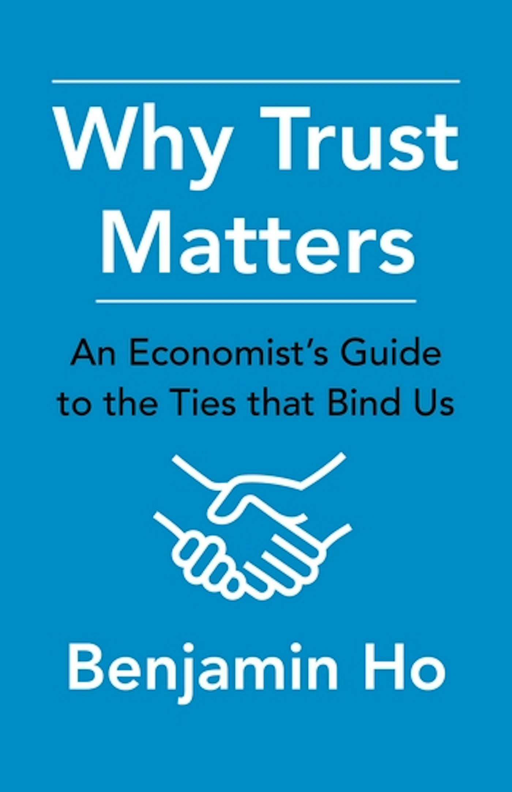

Behavioral economist · Author · Speaker
Trust is the invisible architecture of society.
Benjamin Ho studies how trust, identity, apologies, and incentives shape the choices we make—and the systems we build together.
The New Yorker “Lucidly and compellingly” about the foundational concept of social science.
Columbia University Press2021
About
Economics, with the human behavior left in.

Ben Ho is a professor of economics at Vassar College and author of Why Trust Matters: An Economist's Guide to the Ties that Bind Us.
Ho applies behavioral economics, game theory and experiments to tackle topics like apologies, identity, inequality and climate change. Before Vassar, he taught MBA students at Cornell—where he was selected as one of Poets' and Quants' “40 under 40”—served as lead energy economist at the White House Council of Economic Advisers, and worked or consulted for Morgan Stanley and several tech startups.
Professor Ho is also a faculty affiliate for the Center for Global Energy Policy at Columbia University. His research has appeared in outlets like Management Science and Nature Human Behaviour.
Ho holds seven degrees from Stanford and MIT in economics, education, political science, math, computer science and electrical engineering.
Explore
Research, writing & curiosities
Work across economics, public policy, and the occasional generative art experiment.
Academic website
Research, teaching, and working papers at Vassar.
Visit academic site ↗ 02Curriculum vitae
Appointments, education, publications, and experience.
Open CV ↗ 03Google Scholar
Published research and citation record.
View research ↗ 04Professional profile and career history.
Connect ↗ 05@ho_ben
Commentary, economics, and the occasional observation.
Read tweets ↗ 06Art criticism engine
A random, interactive art project from 2009.
Make some art →Have economists neglected trust? The economy is fundamentally a network of relationships built on mutual expectations. More than that, trust is the glue that holds civilization together.
Every time we interact with another person—to make a purchase, work on a project, or share a living space—we rely on trust. Institutions and relationships function because people place confidence in them. Retailers seek to become trusted brands; employers put their trust in their employees; and democracy only works when we trust our government.
Benjamin Ho reveals the surprising importance of trust to how we understand our day-to-day economic lives. Starting with the earliest societies and proceeding through the evolution of the modern economy, he explores its role across an astonishing range of institutions and practices. From contracts and banking to blockchain and the sharing economy to health care and climate change, Ho shows how trust shapes the workings of the world.
He provides an accessible account of how economists have applied the mathematical tools of game theory and the experimental methods of behavioral economics to bring rigor to understanding trust. Bringing together insights from decades of research in an approachable format, Why Trust Matters shows how a concept that we rarely associate with the discipline of economics is central to the social systems that govern our lives.
Praise for the book
“Clear, engaging, and persuasive: trust me!”
Illustrating how a seemingly noneconomic concept is, in fact, at the heart of many fundamental economic concepts, Why Trust Matters looks back in history to develop the idea that trust undergirds most human interactions. Ho has written a timely, interesting, and fun work for specialists and nonspecialists alike.
Benjamin Ho writes about one of the most important and underexplored factors in how well society functions: trust. Why Trust Matters is clear, engaging, and persuasive: trust me!
This blurb is an act of trust between you, the potential buyer, and me, the esteemed writer who risked his literary reputation to endorse this book. I do so with no fear. Mostly because Benjamin Ho has written a great, necessary, fun, hopeful book that makes you rethink the very basics of society and partly because my rep isn't all that great.
Why Trust Matters validates my long-standing membership in the Ben Ho fan club. His deep knowledge of the historical record, his careful application of economic reasoning, and his charm shine through on every page of this highly readable account of the role of trust in economic and social life.
Trust is critical to civilization and its economy. Benjamin Ho provides a concise, sweeping, accessible, and fascinating summary of the different aspects of trust and their effect on a broad set of social institutions. Whether you are a seasoned economist seeking to broaden your knowledge of the field, a student beginning your journey, or a casual reader looking to deepen your understanding of the world, trust me, you will find this book invaluable.
Selected media
Ideas in the wild
Interviews and writing on trust, apologies, climate, and how economics meets everyday life.
Speaking
Big ideas, made immediate.
Available for speaking about the economics of climate change, behavioral economics, the economics of trust, economics in public policy, and more.
Invite Ben to speakPast audiences & events
- World Bank
- Goldman Sachs
- U.S. Marine Corps
- Rubin Museum of Art
- W. M. Norton and Company
- MIT Dalai Lama Center for Ethics
- Horace Mann Model UN Conference keynote
- OSU Center for Ethics and Human Values
- And more
“You have so much energy on stage, you should be on Broadway!”
Online since December 2000
The old web is still here.
Visit the retired picture gallery, explore the art project, or switch the whole homepage back to its original form.